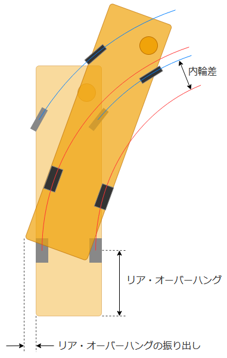

大型二種免許 教習4日目 技能
今日も技能1コマだけ。
技能教習 2時限目
理屈や仕組み、背景などを根拠に説明してくれるタイプの教官だったので、非常にわかりやすかった。
名前見たときに気付いたけど、この人、学科教習でも印象に残っていた人だわ。
「自分は面倒くさい性格をしているので、ルールだけを聞いても覚えられないんですよね。背景とか理由とか、ちゃんとした根拠とセットじゃないと。」っていう話とか、1000ページ近くある『学科教習の手引』を個人で持っている話とか、個人的に好感度高かった。
教習項目以前の部分
前回教えてもらえなかったっぽい、基本的な部分を追加で
- エンジンを掛けるのは、グロープラグの余熱表示灯(コイルみたいなマーク)が消えてから
- それまでは ON の位置で待機する
- 発進時は前方、左右、左右後方に加え、車内の安全確認も行う
前回疑問だったところを質問
エアブレーキ
- 仕組み上、効き始めるまでが遅く感じる
- 遊びのエリアを潰しておくイメージで、さっさと少し踏んだ状態にしてしまうのが良い
- エアブレーキだと低速からのブレーキコントロールは難しいので、もう少しスピードを出して練習した方が良い
加えて、そもそもブレーキペダルに踏み換えて構えるタイミング、踏み始めるタイミングが遅いとのこと。他人より早いタイミングで踏むタイプだと思っていたけど、全然甘かったな……
クラッチペダルまでの距離
むしろ前回より前に座るよう指示された(!)
半クラになるエリアがさらに手前に位置することになってしまったが、一旦はこれで慣れてみて欲しいとのこと。
思ったよりは慣れてきたけど、そのあと自分の車に戻ったとき、深く考えずにクラッチつないだら想像より早くつながってしまいビビったｗ
っていうかアレだよね、教習所によっては路線バスと観光バスが技能教習のたびにランダムに割り当てられるところもあるわけだし、環境は恵まれている方だよね。いや、むしろ本来は常にいろいろな車種・設定でも乗れるようになれって事だろうか。
スイッチ類
- ハザードは左レバーを手前に引く(普通車のウォッシャー方向)
- ワイパーは左レバーをひねる(普通車のリアワイパー)
あ、シフトパターンプレート見ようと思っていたの、忘れていた。
その他アドバイス
- ハンドル回すときに座席から肩が離れてしまっているので、ハンドルはもっと手前で良い
- 第二関節くらいまでか
- 時計の9時15分の位置でハンドルを持ったときに、肘を曲げてお盆を持っているイメージ
- あと、内掛けハンドルにならないよう注意
5. 時期を捉えた発進と加速、目標に合わせた停止並びに路端における停止及び発進
リア・オーバーハング
まず、「尻振り」とか「リア・オーバーハング(の振り出し現象)」とか呼ばれているものについて、三角コーンを使って実演してもらった。
- 車体で後輪より後ろにある部分(リア・オーバーハング)が、例えば右に曲がるときに逆方向の左側にはみ出す現象のこと
- 何も考えずにハンドルを切って曲がっていくと、80cm(!) 位ははみ出す
- なので、右折するときに左後ろにいる原チャリとか、左折するときに右側のレーンを直進している車両とか、そういうのにぶつかる可能性がある

知識としては知っていたけど、曲がる方向と逆側の安全確認をする必要があるのにまだ慣れない。
検定課題練習: 路端停止
そして、もう課題である。俺、まだ大型バスをトータル15分くらいしか運転してないぞ。
路端の左いっぱい(30cm 以内)に沿って車を止めたあと、前方にある障害物を右に避けていく課題。ハンドルを早く切りすぎるとリア・オーバーハングが左のガードレールとか(を模したポール)に当たってしまい、逆に切るのが遅いと前方の障害物を避けるほどは右に出られない、というもの。
- どうせ同じだけ尻を振るなら、さっさと序盤に振って時間を稼いだ方がその分多く右に出られる
- 振り終わったら、それ以上近づかないようにハンドルを戻し始めること
- 左後ろがポールにぶつからないかどうか、ミラーだけで無く直接目視でも確認すること
まず、まだ車幅感覚が無くて左にどのくらい寄っているのかがピンとこない。寄せる手前がたまたま交差点になっているコースなので、序盤に寄せすぎちゃっても大丈夫だからやりやすい方だとは思うんだが。
次に、指定の前後位置に止めるのが難しい(前方の障害物までの距離が規定距離になるように、停止位置にカラーポールがある)。まだブレーキに慣れていないせい。
さらに、左後ろがどのくらいポールに近づいているのか、いまいち分からない。正直、11m ある車体の対角線がポールとどのくらい離れているか、ミラーだろうが直接目視だろうが分かる気がしない……
3回か4回やらせてもらって、まぁアドバイスもらいながらなんとなく出来たけど、多分たまたまだな。。
あと、2速発進時、3速変更時のロッド操作が真上、真下なのに未だに慣れなくて、考えながら操作しないとミスる。
6. カーブや曲がり角の通行
路端停止の開始地点に戻るために、都度外周を少し走る感じだったかな。(外回り、内回り両方適度に)
普通に走るだけなんだが、まだ慣れない。しかも補助ブレーキを2回くらい踏まれてしまった (中央線をはみ出して曲がるカーブなのに対向車に気付かなかったので……)。あと、ハンドルも操作してもらった記憶があるが、席立ってやってくれたのかな？
- ライン取りのイメージが出来ていないので、カーブ中フェンスが近づいたとき慌てて追加でハンドルを回すことがある
- 「追加しなくても曲がりきれるよ」って言われるシーンが多かった
- 瞬間的なフェンスとの距離じゃなくて、バスが今どれくらい曲がりながら走っているか、が意識出来ていないから慌てている
- すでに結構ハンドルを切っているなら、そのままでも大きく角度が変わっていくはず
- 回すにしても、実際のバスの運転手みたいに、じわじわと一定のペースで回せるようにする
- 前輪が運転席より後ろにあることを意識する
- 「追加しなくても曲がりきれるよ」って言われるシーンが多かった
- というか、ハンドルを切り始めるタイミングがまだ早いらしく(意識しているつもりなんだが……)、カーブの最接点に浅く侵入してしまうせいで、カーブ終わりに膨らみ過ぎる
- 曲がり角の縁石と同じ半径で曲がれる車体サイズじゃないので、後輪がアウト・イン・アウトしないといけない
- とは言え、事前に遊びを殺しておくために事前に多少回しておくイメージは必要とのこと
- また、特に右左折のときなど、もっとハンドルを回せるのに途中で回すのを止める癖が付いている
- ミラーばかり見ているので道に対して平行にならないことが多い
- 右カーブも左カーブも、もっと左に寄って良い
- 今でも結構ギリギリに見えていたんだけど、そのうち慣れてもっと近づけるのだろうか
- ストレートに備えてカーブ終わりから加速を始める
なんというか、大型バスをなめていたというか、もっと簡単に運転出来るもんだと思っていた。「中型乗ったことない人がいきなり大型乗ると大変だよ」的な記事はいくつか見ていたんだが、どうせすぐ慣れるだろうという慢心があった気がする。
あとシフトチェンジな。普段 MT 乗っているから余裕だと思ったら、そんなこと無かった。
っていうか、未だに心のどこかで「自分は周りとは違うんだZE」って思っているってことなんだよなぁ。凹んできた。
帰り道
なんか、加減速やシフトチェンジの仕方とか、カーブの曲がり方とかを意識しながら車乗っていたら、「あれ、普段どうやって運転していたんだっけ？」ってなって運転感覚が分からなくなってきた。
理屈を考えすぎているだけなら良いんだけど、もしかして今までも運転が下手だったのか？それに今まで気付いていなかったのか……？とか、悩んで来ちゃったぜ。
あとアレね。大型車はサイドミラー大きくて良いよね。普通車に戻ると小さすぎてビビる。
次回へ備えたメモ
- 2速発進時のロッド操作は真上、3速変更時は真下
- 真上・真下で覚えるより、いっそのこと (普通車で言う) 3速で発進して、4速に変更するイメージでやってみるか
- ブレーキングの練習のためにも、ストレートではもっと加速する
- 2速つないだらさっさと3速にする→3速をいつもの感覚より強く加速させる→4速にすることを目指す
- 教官の模範運転見ていると、普段自分が CX-5 運転しているときの加速より勢いがある
- 4速にしないときは加速後も3速をつないだままになるけど、その状態で急にアクセル離すと揺れるので注意
- 2速つないだらさっさと3速にする→3速をいつもの感覚より強く加速させる→4速にすることを目指す
- ブレーキはもっと手前から軽く踏む
- 曲がるときはミラーを見過ぎないで前を見る
- ハンドルはゆっくり回す
- おまけ: シフトパターンプレートを見る